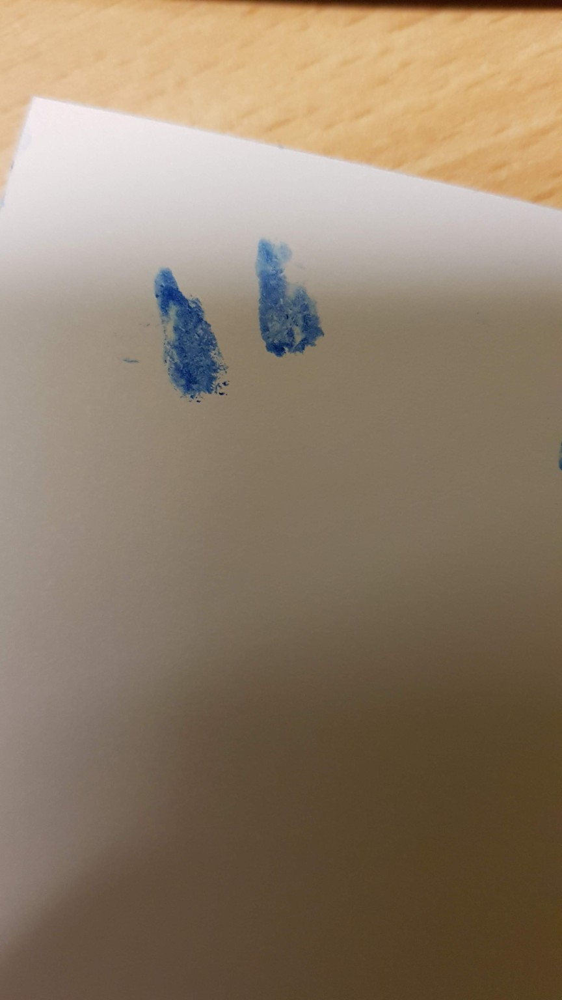

The first light
Sky’s Story
His life was short. His light remains.

The moment I learned that Sky existed was one of the happiest moments of my life. Having to let him go became the deepest pain I have ever known.
Sky was born on . He lived for only a few months. Yet no measure of time could describe what he means to us. He taught us that love is not counted in years, but in the depth of the bond that remains.
After we lost him, we learned how quiet and lonely grief can become. A child is still loved, still missed and still part of the family—yet the world often grows silent around their name.
Years later, the love for Sky became Skysbridge: a place where children who left too soon can be named, honoured and remembered with dignity, and where their stories are allowed to remain.
Sky is the first light in A Sky Full of Stars. His star is where this place began—and beside him, every child can have a light of their own.